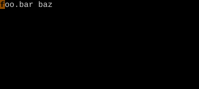
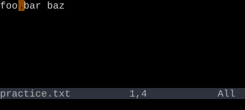
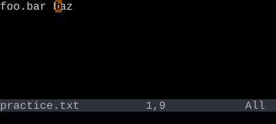

WORD Motions
W, B, E, gE — like w/b/e/ge but bigger words.
Capital-letter word motions treat any non-whitespace character as part of the word. So foo->bar.baz is one WORD, three words.
w skips between keyword runs. W skips between whitespace-separated chunks. The capital is bigger.
| Key | Note |
|---|---|
| W |
| Key | Note |
|---|---|
| B |
| Key | Note |
|---|---|
| E |
| Key | Note |
|---|---|
| g | |
| E |
Reference
| Key | Direction | Lands on |
|---|---|---|
| W | Forward | Start of next WORD |
| B | Back | Start of previous WORD |
| E | Forward | End of WORD |
| gE | Back | End of previous WORD |
Worked example — W vs w
WORD motions ignore punctuation as separators.


Lower-case w treats '.' as a word boundary.

Upper-case W treats whitespace-separated chunks as one WORD.
See also: Word Motions, Inner Word vs Around Word